SageMaker Unified Studio与Lake Formation实现湖仓细粒度访问控制
DataHot 速览
AWS官方博客介绍如何结合IAM Identity Center、Lake Formation基于标签的访问控制（TBAC）以及SageMaker Unified Studio的信任身份传播，为大规模企业湖仓构建自动化的最小权限访问治理架构。方案使用CDK部署，通过LF-Tags对数据分类，将IAM Identity Center组映射到标签策略，并在查询时跨分析引擎强制执行权限，解决表级权限手动管理带来的权限漂移与审计困难问题。
为什么值得关注：数据平台治理团队可参考该架构，利用标签与身份中心自动化的细粒度权限控制，降低湖仓规模扩大后的合规风险与运维成本。
原文
As enterprise lakehouses grow to thousands of tables across multiple business domains and regions, scaling fine-grained access control becomes a critical governance challenge. Data governance teams spend significant time manually granting table-level permissions, only to face permission drift, inconsistent enforcement, and limited auditability. Without a scalable approach, each new dataset requires manual policy updates, increasing the risk of unauthorized access and slowing time-to-insight for analysts and data scientists.
In this post, we show you how to solve this problem by combining AWS IAM Identity Center, AWS Lake Formation tag-based access control (TBAC), and trusted identity propagation in Amazon SageMaker Unified Studio. You deploy a complete governance architecture using AWS Cloud Development Kit (AWS CDK) that classifies data with LF-Tags, maps IAM Identity Center groups to tag-based policies, and enforces permissions at query time across analytics engines. The solution uses Apache Iceberg tables stored in Amazon Simple Storage Service (Amazon S3) and registered in the AWS Glue Data Catalog.
The core governance challenge
As organizations mature their lakehouse environments, governance complexity increases with each new dataset. Several challenges commonly emerge:
- Explosive dataset growth: Iceberg-based lakehouses often contain thousands of tables distributed across raw, curated, and conformed zones. Each new dataset introduces additional governance requirements, making table-level permission grants operationally expensive.
- Multi-domain data ownership: Enterprise lakehouses typically serve multiple business domains such as commercial analytics, clinical research, and regulatory reporting. These domains require strict isolation while still supporting controlled data sharing.
- Regional data sovereignty: Organizations operating globally must enforce geographic boundaries for sensitive datasets. EU clinical trial data might be restricted by GDPR regulations, whereas US commercial datasets follow different compliance frameworks.
- Sensitivity-based access controls: Within each domain, datasets vary in sensitivity. Pricing strategies, drug discovery research, and patient-related datasets require stricter access controls than standard operational data.
- Role explosion: Pure RBAC approaches attempt to encode these dimensions into roles, leading to role proliferation. Manual Lake Formation grants at the table level create permission drift and limited scalability.
To address these challenges, enterprise lakehouse governance must satisfy several criteria:
- Least-privilege access.
- Dynamic scalability as new datasets are onboarded.
- Multi-dimensional enforcement across domain, region, and sensitivity.
- Auditability traceable to individual users.
- Automation-ready, configuration-driven workflows.
TBAC addresses each of these challenges directly. Instead of granting permissions on individual tables, you define tag-based policies that automatically apply to any resource matching the tag expression. New datasets inherit access rules through tag inheritance, eliminating manual policy updates (solving explosive dataset growth). Domain and region tags enforce strict isolation between business units (solving multi-domain ownership and regional sovereignty). Sensitivity tags control access within domains without role proliferation (solving sensitivity-based controls and role explosion). The following sections describe the architecture that implements this model and walk you through deploying it end to end.
Reference architecture overview
The governance model integrates identity, metadata, and lakehouse services into a unified access architecture that enforces fine-grained permissions consistently across analytics and machine learning (ML) workloads. The architecture consists of five layers, each handling a distinct responsibility in the access control flow.
The following diagram illustrates the end-to-end architecture, showing how user identity flows from IAM Identity Center through SageMaker Unified Studio to Lake Formation for tag-based policy evaluation against the AWS Glue Data Catalog and Amazon S3 storage layer.
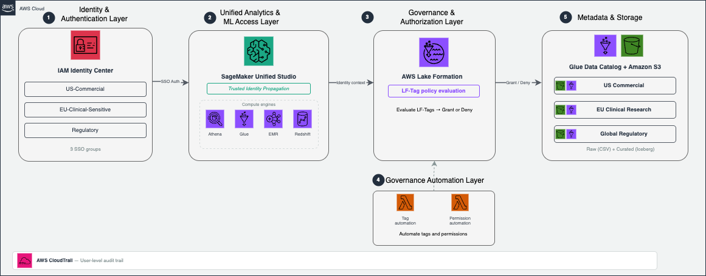
Figure 1: End-to-end governance architecture for the enterprise lakehouse
1. Identity and authentication layer: IAM Identity Center manages user identities and group memberships, integrates with corporate identity providers, and provides centralized lifecycle management for enterprise users. IAM Identity Center groups represent business roles and serve as the principals that receive Lake Formation permissions.
2. Unified analytics and ML access layer: Amazon SageMaker Unified Studio serves as the primary interface where analysts, data scientists, and ML engineers discover datasets, run queries, and build ML workflows. Because SageMaker Unified Studio integrates with multiple compute engines, including Amazon Athena, AWS Glue, Amazon EMR, and Amazon Redshift, users can access data using their preferred analytics tools while maintaining consistent governance.
3. Governance and authorization layer: AWS Lake Formation provides fine-grained access control across AWS Glue catalog resources using LF-Tags. Instead of granting permissions directly on databases and tables, Lake Formation evaluates LF-Tag policies dynamically and grants or denies access at query time. Governance teams define access rules once, and Lake Formation automatically applies them to new datasets as they are onboarded.
4. Governance automation layer: Two AWS Lambda functions automate tag assignment and permission provisioning. JSON metadata configuration files drive both pipelines, so governance teams manage access control through configuration rather than manual console operations.
5. Metadata and storage layer: Apache Iceberg tables stored in Amazon S3 form the foundation of the lakehouse. You register these tables in the AWS Glue Data Catalog, which provides centralized metadata management and interoperability across analytics services. Lake Formation evaluates governance decisions at the catalog level rather than independently by each analytics engine.
End-to-end access flow
When a user queries a dataset from SageMaker Unified Studio, the following sequence occurs:
- The user authenticates through IAM Identity Center and accesses SageMaker Unified Studio.
- SageMaker passes the user’s identity context to downstream analytics services using trusted identity propagation.
- The analytics engine requests data access from Lake Formation.
- Lake Formation evaluates LF-Tag policies against the user’s IAM Identity Center group membership.
- Access is granted or denied dynamically at query time.
Because authorization decisions are centralized in Lake Formation, governance remains consistent regardless of which analytics engine the user employs.
Hybrid RBAC + ABAC governance model
The governance model combines identity context from IAM Identity Center with metadata-driven classification using LF-Tags. The following table summarizes how each layer contributes to the overall governance workflow.
| Governance capability | IAM Identity Center contribution | Lake Formation LF-Tag contribution | Governance outcome |
| Identity context | Organizes users into groups aligned with business roles | Evaluates permissions using group membership | Role-aligned access boundaries |
| Data classification | Provides role eligibility for data access | Classifies datasets by domain, region, sensitivity, and layer | Attribute-aware authorization |
| Scalability | Simplifies user lifecycle management | Automatically applies policies to newly tagged datasets | Governance that scales with dataset growth |
| Operational model | Centralizes role lifecycle operations | Enables metadata-driven policy automation | Reduced administrative overhead |
IAM Identity Center defines who can request access, LF-Tags define what datasets are eligible, and Lake Formation enforces policies dynamically at query time.
Enterprise LF-Tag data model
A structured tagging strategy is the foundation of scalable Lake Formation governance. In this solution, the solution classifies datasets across four governance dimensions.
| Tag Key | Tag Values | Purpose | Example Usage |
| region | us, eu, global | Geographic data location | Enforce GDPR compliance for EU data |
| domain | commercial, clinical_research, regulatory | Business domain | Separate commercial from clinical data |
| data_class | standard, sensitive, regulated | Data sensitivity level | Restrict access to sensitive pricing data |
| layer | raw, curated, conformed | Data processing stage | Grant analysts access to curated data only |
Together, these dimensions enable multi-dimensional authorization policies that reflect both organizational structure and regulatory requirements.
Tag inheritance and evaluation
LF-Tags can be applied at three resource levels within the Glue Data Catalog: database, table, and column. In this implementation, database-level tags define broad governance attributes (domain, region, layer), table-level tags capture dataset-specific sensitivity (data_class), and column-level tags can further restrict access to individual fields. Lake Formation evaluates the effective tag set at query time by combining inherited and explicitly assigned tags.
For example, a database tagged domain=commercial, region=us, layer=raw automatically applies those tags to all tables within it. A table-level data_class=sensitive tag supplements the inherited tags to distinguish sensitive pricing data from standard sales data. This inheritance model means new tables automatically receive governance coverage without manual tag assignment. To learn more, refer to Lake Formation tag-based access control best practices.
Prerequisites
Before deploying the solution, complete the following setup in the us-east-1 Region. Use the same AWS Region throughout all steps.
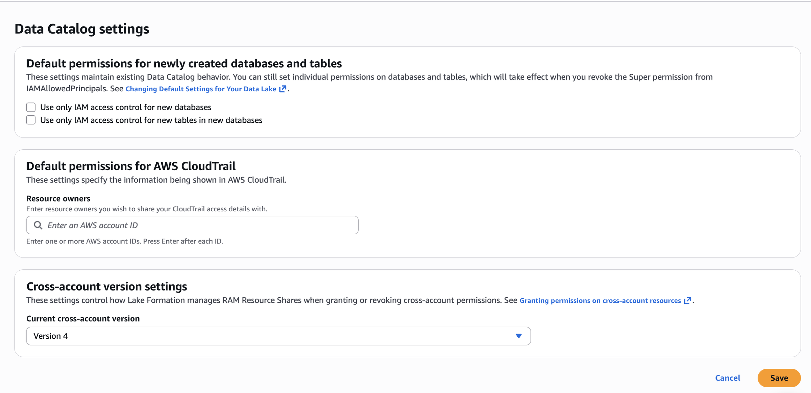
- AWS account and IAM Identity Center: Enable IAM Identity Center and create test users. Note your Identity Store ID from the IAM Identity Center console under Settings. For setup guidance, see Getting started with IAM Identity Center.
- Lake Formation configuration: Complete the following setup in the Lake Formation console:2.1. Change Data Catalog default permissions. In the navigation pane under Administration, choose Data Catalog settings. Uncheck Use only IAM access control for new databases and uncheck Use only IAM access control for new tables in new databases. Choose Save. This makes sure Lake Formation permissions govern access to databases and tables created by the CDK stacks. Figure 2: Lake Formation Data Catalog settings with both IAM-only access control checkboxes unchecked 2.2. Integrate with IAM Identity Center. Complete the prerequisites for IAM Identity Center integration with Lake Formation, including enabling trusted identity propagation.You don’t need to manually create a Lake Formation administrator. The CDK deployment in Step 2: Deploy all stacks automatically registers the required administrators via the
LfAdminStack(see lf-admin-stack.ts). S3 data location registration is a post-deployment console step covered after the CDK creates the buckets. - SageMaker Unified Studio: Create a SageMaker Unified Studio domain, select your IAM Identity Center instance for authentication, and enable trusted identity propagation. For a detailed walkthrough, see Accelerate your analytics with Amazon S3 Tables and Amazon SageMaker Lakehouse and enable trusted identity propagation for the domain.
- Local tooling: Install AWS Command Line Interface (AWS CLI), Python 3.x, Node.js 18+, AWS CDK CLI (
npm install -g aws-cdk), and Git.
Solution overview
Now that you understand the governance model and tag taxonomy, the following section walks you through deploying the complete infrastructure and configuring access control.
The deployment uses AWS CDK (TypeScript) and consists of seven stacks that create the complete governance infrastructure. The CDK app manages stack dependencies automatically, so a single cdk deploy --all command deploys everything in the correct order.
The architecture uses a two-layer data lake pattern. The raw layer stores data as CSV files in Amazon S3, registered as external tables in the AWS Glue Data Catalog. The curated layer uses Apache Iceberg v2 tables for ACID transactions and schema evolution. Three business domains (US Commercial, EU Clinical Research, and Global Regulatory) each have one representative table per layer, giving six tables total.
Lake Formation tag-based access control (TBAC) governs all access using four tag dimensions:
| Tag Key | Values | Purpose |
| domain | commercial, clinical_research, regulatory | Business domain isolation |
| region | us, eu | Geographic data boundary |
| data_class | standard, sensitive, regulated | Sensitivity classification |
| layer | raw, curated | Data layer identification |
Step 1: Clone the repository and install dependencies
Clone the accompanying repository and install the CDK project dependencies:
git clone https://github.com/aws-samples/sample-aws-smus-governance-automation
cd aws-smus-governance-automation/cdk
npm installThe CDK project is written in TypeScript and uses aws-cdk-lib v2. The lib/ directory contains seven stack definitions, and bin/app.ts wires them together with explicit dependency ordering.
If this is your first CDK deployment in this account and Region, bootstrap the CDK environment. Bootstrapping provisions an S3 bucket and IAM roles that CDK uses to deploy assets:
cdk bootstrap aws://<ACCOUNT_ID>/us-east-1Step 2: Deploy all stacks
Deploy the entire infrastructure with a single command. Pass your IAM Identity Center Identity Store ID as a CDK context variable:
cdk deploy --all -c identityStoreId=d-xxxxxxxxxx --require-approval never --region us-east-1CDK will prompt for IAM permission changes on each stack. The --require-approval never flag auto-approves these so the deployment runs unattended.
CDK deploys the seven stacks in dependency order:
- LfSetupStack: Lake Formation admin registration + LF-Tags (
domain,region,data_class,layer) - GlueRawTablesStack: S3 bucket + three Glue databases + three CSV-backed tables.
- GlueCuratedTablesStack: S3 bucket + three Glue databases + three Iceberg v2 tables.
- DataLake-US-Commercial:
domain=commercial,region=us,data_class=standard. - DataLake-EU-Clinical-Research-Sensitive:
domain=clinical_research,region=eu,data_class=sensitive,regulated. - DataLake-Regulatory:
domain=regulatory(all regions, all data classes within regulatory).
The following table summarizes the user personas, their group assignments, and the data access each group provides:
AssetTaggingAutomationStack: Tag automation Lambda. SsoPermissionAutomationStack: Permission automation Lambda. LfAdminStack: Registers CDK + Lambda roles as Lake Formation admins. After deployment completes, review the CloudFormation stack outputs. They include S3 bucket names, database names, SSO group IDs, and Lambda function ARNs.
The following figure shows all seven CDK stacks deployed successfully in the CloudFormation console.
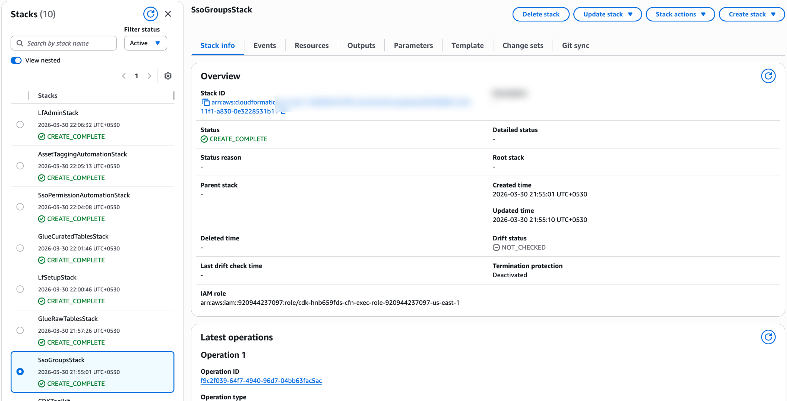
Figure 3: CloudFormation console showing all seven CDK stacks in CREATE_COMPLETE status
Register S3 data locations with Lake Formation: Now that the S3 buckets exist, register them with Lake Formation. In the Lake Formation console, under Administration, choose Data lake locations, then choose Register location. Register both buckets from the stack outputs (for example, s3://datalake-raw-data-<ACCOUNT_ID>-us-east-1 and s3://datalake-curated-data-<ACCOUNT_ID>-us-east-1). For IAM role, use the default AWSServiceRoleForLakeFormationDataAccess and choose Lake Formation as the permission mode. See Registering an Amazon S3 location for step-by-step instructions.
The following figure shows both data lake S3 locations registered in the Lake Formation console.
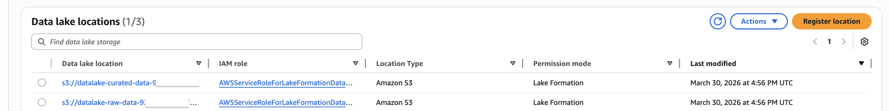
Figure 4: Lake Formation Data lake locations page with raw and curated S3 buckets registered
Step 3: Populate sample datasets
The scripts use Amazon Athena to insert sample data. Athena stores query results under the athena-results/ prefix in the shared governance metadata bucket (lf-governance-metadata-<ACCOUNT_ID>-<REGION>) created by the CDK deployment.
Populate the raw and curated tables:
cd ../scripts
python3 populate_raw_layer.py
python3 populate_curated_layer.pyEach script executes INSERT INTO statements through the Athena StartQueryExecution API and waits for completion. You should see success messages for all six tables (three raw, three curated).
After populating the tables, you can verify the data in the Glue Data Catalog. The following figure shows the six tables across the three raw and three curated databases.
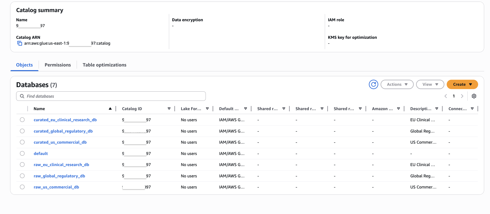
Figure 5: AWS Glue Data Catalog showing the six databases and tables created by the CDK deployment
You can also preview the data by querying a table. The following figure shows sample data from the us_sales_summary table.
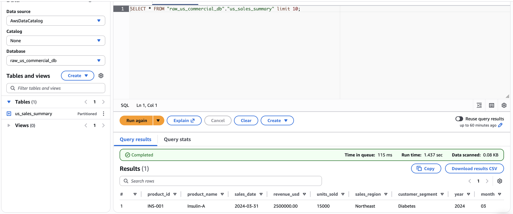
Figure 6: Query results for the us_sales_summary table with sample commercial data
Step 4: Apply LF-Tags to data assets
The following diagram illustrates the governance automation flow, showing how metadata JSON configuration files drive the two Lambda pipelines for asset tagging and SSO permission management.
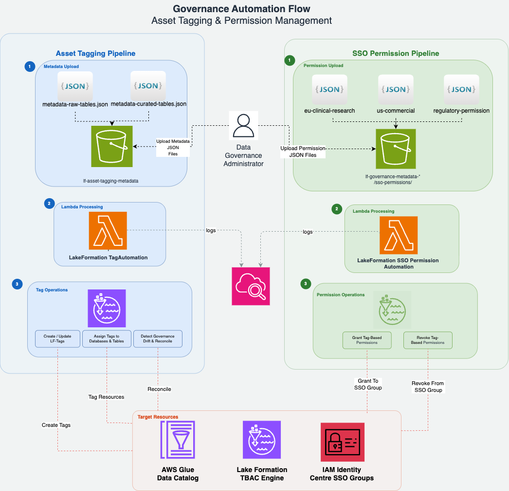
Figure 7: Governance automation flow showing the asset tagging and SSO permission Lambda pipelines
The diagram shows two parallel pipelines, each following three steps:
Asset tagging pipeline (left):
- Metadata upload – A data governance administrator uploads metadata JSON files (
metadata-raw-tables.jsonandmetadata-curated-tables.json) to theasset-tagging/prefix in the shared S3 governance metadata bucket. These files define which LF-Tags to assign to each AWS Glue database and table. - Lambda processing – The S3 upload triggers the
LakeFormationTagAutomationLambda function, which reads the metadata and calls the Lake Formation API. - Tag operations – The Lambda creates or updates LF-Tags, then assigns them to the target databases and tables in the AWS Glue Data Catalog.
SSO permission pipeline (right):
- Permission upload – Three permission JSON files (one per IAM Identity Center group) are uploaded to the
sso-permissions/prefix. These files define the LF-Tag policy expressions that control data access. - Lambda processing – The upload triggers the
LakeFormationSSOPermissionAutomationLambda function. - Permission operations – The Lambda grants tag-based permissions to the corresponding IAM Identity Center groups through the Lake Formation API.
Both pipelines log execution details to Amazon CloudWatch for monitoring and troubleshooting.
Two metadata JSON configuration files drive the asset tagging Lambda that declaratively define which LF-Tags to apply to each AWS Glue resource:
metadata-raw-tables.json: Tag definitions for the three raw layer databases and tables.metadata-curated-tables.json: Tag definitions for the three curated layer databases and tables.
Each entry in these files specifies the following fields:
| Field | Description | Example |
| catalog_id | Your AWS account ID (Glue Data Catalog ID) | 123456789012 |
| resource_type | DATABASE or TABLE | DATABASE |
| database_name | AWS Glue database name | raw_us_commercial_db |
| table_name | AWS Glue table name (only for TABLE entries) | us_sales_summary |
| lf_tags | Array of LF-Tag key/value pairs to assign | [{“TagKey”:“domain”,“TagValues”:[“commercial”]}] |
| access_type | Action to perform (GRANT) | GRANT |
Parameters you must update before invoking: Replace the catalog_id value in every entry of both files with your own AWS account ID. The database and table names match the resources created by the CDK stacks, so those should not be changed unless you customized the stack parameters.
The following snippet from metadata-raw-tables.json shows a database-level entry and a table-level entry:
[
{
"comment": "DATABASE LEVEL TAGS - US Commercial RAW Domain",
"access_type": "GRANT",
"resource_type": "DATABASE",
"catalog_id": "<YOUR_ACCOUNT_ID>",
"database_name": "raw_us_commercial_db",
"lf_tags": [
{ "TagKey": "region", "TagValues": ["us"] },
{ "TagKey": "domain", "TagValues": ["commercial"] },
{ "TagKey": "layer", "TagValues": ["raw"] }
]
},
{
"comment": "TABLE LEVEL TAGS - US Commercial RAW Table (Standard Access)",
"access_type": "GRANT",
"resource_type": "TABLE",
"catalog_id": "<YOUR_ACCOUNT_ID>",
"database_name": "raw_us_commercial_db",
"table_name": "us_sales_summary",
"lf_tags": [
{ "TagKey": "data_class", "TagValues": ["standard"] }
]
}
]The Lambda applies tags at two levels: database-level entries assign domain, region, and layer tags, while table-level entries assign the data_class tag (standard, sensitive, or regulated). Because of two-level tagging, new tables added to a tagged database automatically inherit the database-level tags. Only the table-specific data_class tag needs explicit assignment. To learn more about this pattern, refer to Lake Formation tag-based access control best practices.
Invoke the Lambda for both layers:
cd ../lf-asset-tagging-automation
aws lambda invoke \
--function-name LakeFormationTagAutomation \
--payload fileb://metadata-raw-tables.json \
--cli-binary-format raw-in-base64-out \
response.json
aws lambda invoke \
--function-name LakeFormationTagAutomation \
--payload fileb://metadata-curated-tables.json \
--cli-binary-format raw-in-base64-out \
response.jsonVerify tag assignment using the GetResourceLFTags API:
aws lakeformation get-resource-lf-tags \
--resource '{"Table":{"DatabaseName":"raw_us_commercial_db","Name":"us_sales_summary"}}' \
--region us-east-1You should see domain=commercial, region=us, layer=raw, and data_class=standard in the response.
The following figure shows the LF-Tags assigned to the us_sales_summary table in the Lake Formation console, confirming that both database-level inherited tags and table-level tags are applied correctly.
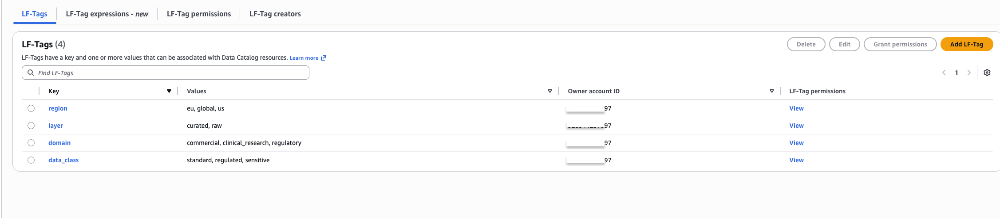
Figure 8: LF-Tags on the us_sales_summary table showing inherited and table-level tags
Step 5: Provision SSO group permissions
Three permission JSON files (one per IAM Identity Center group) define the LF-Tag policy expressions. Update sso_group with the group UUID from the SsoGroupsStack outputs and identity_center_account_id with your AWS account ID. For detailed configuration, see the repository README.
[
{
"sso_name": "DataLake-US-Commercial",
"sso_group": "<GROUP_UUID_FROM_CDK_OUTPUT>",
"identity_center_account_id": "<YOUR_ACCOUNT_ID>",
"resources": [
{
"resource_type": "DATABASE",
"permissions": ["DESCRIBE"],
"lf_tag_expression": [
{ "TagKey": "domain", "TagValues": ["commercial"] },
{ "TagKey": "region", "TagValues": ["us"] },
{ "TagKey": "layer", "TagValues": ["curated", "raw"] }
]
},
{
"resource_type": "TABLE",
"permissions": ["SELECT", "DESCRIBE"],
"lf_tag_expression": [
{ "TagKey": "domain", "TagValues": ["commercial"] },
{ "TagKey": "region", "TagValues": ["us"] },
{ "TagKey": "data_class", "TagValues": ["standard"] },
{ "TagKey": "layer", "TagValues": ["curated", "raw"] }
]
}
]
}
]Apply permissions for each group:
cd ../lf-sso-permission-automation
python3 lambda_function.py us-commercial-permissions.json
python3 lambda_function.py eu-clinical-research-sensitive-permissions.json
python3 lambda_function.py regulatory-permissions.jsonaws lakeformation list-permissions \
--principal '{"DataLakePrincipalIdentifier":"arn:aws:identitystore:::group/<GROUP_ID>"}' \
--region us-east-1Step 6: Validate fine-grained access control
With all permissions in place, validate that Lake Formation TBAC enforces the correct access boundaries by signing in to SageMaker Unified Studio as different IAM Identity Center users.
Test as Sarah (US Commercial Analyst) — Sarah belongs to DataLake-US-Commercial, which grants access to standard commercial data only.
SELECT * FROM raw_us_commercial_db.us_sales_summary LIMIT 10;Sarah sees all rows and columns successfully:
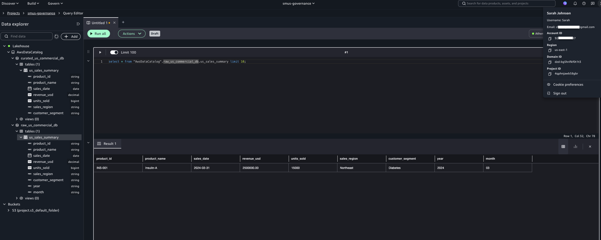
Figure 9: Sarah’s successful query on us_sales_summary in SageMaker Unified Studio
Querying outside her authorized domain returns an access denied error:
SELECT * FROM raw_eu_clinical_research_db.eu_drug_discovery LIMIT 10;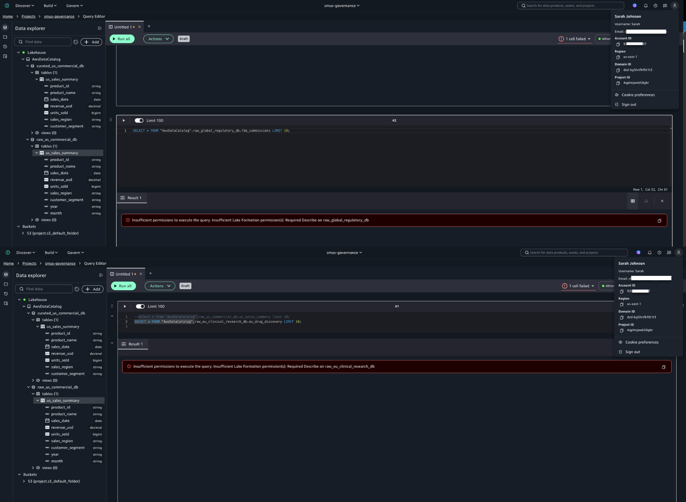
Figure 10: Access denied when Sarah queries eu_drug_discovery, confirming TBAC enforcement
Test as Dr. Chen (EU Clinical Research Lead) — Dr. Chen can access sensitive and regulated EU clinical research data (eu_drug_discovery) but is denied access to US commercial data (us_sales_summary), confirming regional and domain isolation.
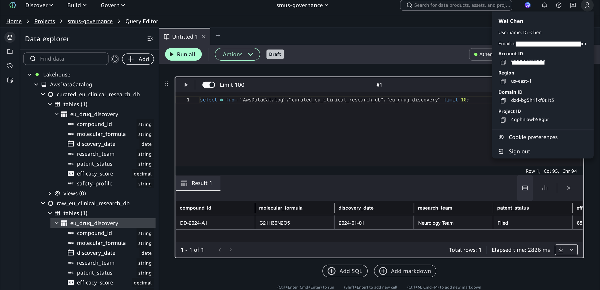
Figure 11: Dr. Chen’s successful query on eu_drug_discovery
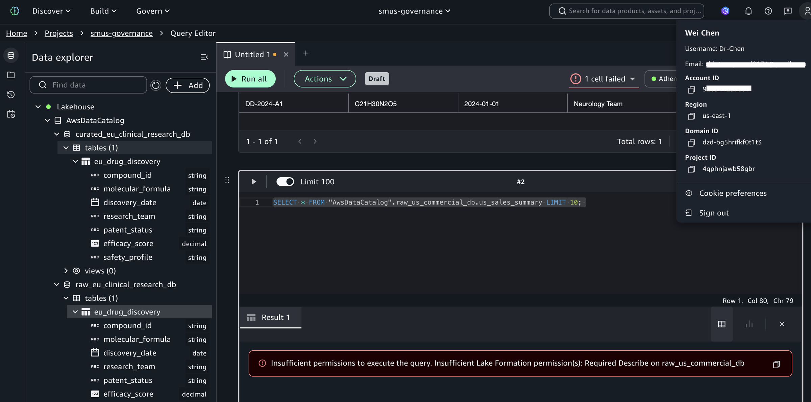
Figure 12: Access denied when Dr. Chen queries us_sales_summary
Test as Alex (Regulatory Affairs Specialist) — Alex’s tag expression uses only domain=regulatory without a region constraint, granting cross-regional access to regulatory data while maintaining strict isolation from commercial and clinical research domains.
Figure 13: Alex’s successful query on fda_submissions
Figure 14: Access denied when Alex queries us_sales_summary
These tests demonstrate that TBAC enforces fine-grained permissions based on user identity, data classification, regional boundaries, and domain separation, without per-table permission grants. As new tables are added and tagged, existing groups automatically gain or are denied access based on their tag expressions. This is the core advantage of TBAC over named resource permissions.
Audit user access with CloudTrail
A key benefit of integrating Lake Formation with IAM Identity Center is the detailed audit trail available through AWS CloudTrail. Filter Event history by Event name GetDataAccess to see every data access event. Each record includes the IAM Identity Center user UUID (userIdentity.onBehalfOf.userId), the specific table accessed (requestParameters.tableArn), and confirmation that trusted identity propagation was used (additionalEventData.LakeFormationTrustedCallerInvocation: true).
Figure 15: CloudTrail GetDataAccess event showing Identity Center user identity and table access details
To resolve the user UUID to a human-readable name, query the Identity Store:
aws identitystore describe-user \
--identity-store-id d-xxxxxxxxxx \
--user-id <USER_UUID_FROM_EVENT> \
--region us-east-1This audit capability provides the detailed access logs required for HIPAA, GDPR, and FDA compliance, showing exactly which users accessed which data and when. Learn about configuring CloudTrail for Lake Formation in Logging Lake Formation API calls with CloudTrail.
Cleanup
Run cdk destroy --all to remove all stacks. Manually delete the retained S3 data buckets (datalake-raw-data-* and datalake-curated-data-*) and revoke any remaining Lake Formation permissions. For detailed cleanup steps, see the repository README.
Conclusion
In this post, we showed you how to implement scalable fine-grained access control for an enterprise lakehouse by combining AWS Lake Formation tag-based access control, IAM Identity Center, and trusted identity propagation in SageMaker Unified Studio. The four-dimension LF-Tag taxonomy, hybrid RBAC + ABAC governance model, and metadata-driven Lambda automation together create a governance architecture where new datasets automatically inherit access policies through tag inheritance, permissions scale without per-table grants, and every data access event is auditable to the individual user through CloudTrail.
To extend this solution, consider adding new business domains, implementing column-level security with LF-Tags, scaling to multi-account architectures with Lake Formation cross-account sharing, or integrating additional analytics services such as Amazon Redshift Spectrum or Amazon EMR.
Get started by deploying the CDK stacks from the accompanying repository. To learn more: